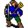

Golin¶| Stat | Value |
|---|---|
| Class | humanoid |
| HP | 80 |
| Max AP | 10 |
| Attack cost | 4 |
| Move cost | 5 |
| Damage | 1 to 4 |
| Attack chance | 40 |
| Block chance | 120 |
| Damage resistance | 5 |
| Critical skill | 0 |
| Critical multiplier | 0 |
Found on¶
Quests¶
- Lessons learned: stages 20, 30, 40, 50, 60, 100, 104, 240
- brv_nondisplay2 (hidden flag): stages 20, 21
Dialogue (75 lines)
What the dialogue says, exactly as in the game files. Lines are listed once; links jump to the line a choice leads to.
golin (silent check: the first matching branch below is taken)
- branch 1 (if reached stage 220 of Lessons learned) → golin_220
- branch 2 (if reached stage 210 of Lessons learned) → golin_210
- branch 3 (if reached stage 200 of Lessons learned) → golin_200
- branch 4 (if reached stage 152 of Lessons learned) → golin_152
- branch 5 (if reached stage 150 of Lessons learned) → golin_150
- branch 6 (if reached stage 124 of Lessons learned) → golin_124
- branch 7 (if reached stage 122 of Lessons learned) → golin_122
- branch 8 (if reached stage 120 of Lessons learned) → golin_120
- branch 9 (if reached stage 104 of Lessons learned) → golin_104
- branch 10 (if reached stage 100 of Lessons learned) → golin_100
- branch 11 (if reached stage 60 of Lessons learned) → golin_60
- branch 12 (if reached stage 50 of Lessons learned) → golin_50
- branch 13 (if reached stage 40 of Lessons learned) → golin_40
- branch 14 (if reached stage 30 of Lessons learned) → brv_school_seated_22
- branch 15 → brv_school_seated_12
golin_220 Golin: “Pity you are leaving. It was a nice break from the boring lessons.”
golin_210 Golin: “What a pity you have to go.”
golin_200 Golin: “Wow, that was exciting!”
- Next → golin_200_10
golin_152 Golin: “Wow, what is that beast? You were splendid!”
- “Thank you.” → golin_152_10
- “Oh, that was nothing special.” → golin_152_10
golin_150 Golin: “Wow, what is that beast? What did you do?”
- “I don't know either, but it looks like it wants to kill me.” → conversation ends
golin_124 Golin: “Wow - you dared to fight the teacher. Awesome!”
golin_122 Golin: “You killed the teacher! She was not very good, but she did not deserve such a death.”
- Next → golin_122_10
golin_120 Golin: “Hey, do not run away! Finish your fight with the teacher.”
golin_104 Golin: “Practice session is over now. We won't duel anymore.”
golin_100 Golin: “Hey, you are not bad! We should stop here indeed. Otherwise you might get hurt.” — effects: sets stage 104 of Lessons learned, clears stage 100 of Lessons learned, spawns monsters on brimhaven_school
- “Sure.” → conversation ends
- “Me? You will get hurt!” → golin_100_10
golin_60 Golin: “You want to fight me?! Hahaha!”
- “What's so funny about it?” → golin_60_10
golin_50 Golin: “I already have my exercise equipment.”
- “Hush, the teacher is talking again.” → brv_school_seated
golin_40 Golin: “It's about time. This is my favorite class.”
- “What will happen now?” → golin_40_10
brv_school_seated_22 Teacher: “No talking, please.”
- “But...” → brv_school_seated_22
- “[nod silently]” → brv_school_seated_30
brv_school_seated_12 Golin: “Hi kid. I am Golin.” — effects: sets stage 20 of Lessons learned
- “Thanks, it's a pleasure.” → brv_school_seated_14
- “[nod silently]” → brv_school_seated_20
golin_200_10 Golin: “I never liked this statue, but I never thought that it would be so evil.”
golin_152_10 Golin: “Now that the statue is gone, I feel like a great burden has fallen from my soul.”
- “I found the statue in the corner awful right from the beginning.” → conversation ends
golin_122_10 Golin: “I will avenge her. Prepare to die!” — effects: faction “brv_fct_school_duel” -10, sets stage 240 of Lessons learned
- Next → fight starts
golin_100_10 Golin: “Haha! Yes, me of course. Do not always be offended.”
golin_60_10 Golin: “Hahaha! Hahaha! Sorry * snort * Pooh! You are really funny!”
- “Do you think?” → golin_60_20
brv_school_seated (silent check: the first matching branch below is taken)
- branch 1 (if reached stage 60 of Lessons learned) → conversation ends
- branch 2 (if carry 1× Wooden sword; carry 1× Paper shield) → brv_school_practice_20
- branch 3 (if carry 1× Wooden sword; wearing Paper shield) → brv_school_practice_20
- branch 4 (if wearing Wooden sword; carry 1× Paper shield) → brv_school_practice_20
- branch 5 (if wearing Wooden sword; wearing Paper shield) → brv_school_practice_20
- branch 6 (if reached stage 40 of Lessons learned) → brv_school_practice_10
- branch 7 (if reached stage 30 of Lessons learned) → brv_school_seated_30
- branch 8 (if reached stage 20 of Lessons learned) → brv_school_seated_20
- branch 9 → brv_school_seated_10
golin_40_10 Golin: “Listen, she is going to explain.”
- Next → brv_school_practice_10
brv_school_seated_30 Teacher: “I will start from the beginning again, because it is so important. You can't listen to it often enough.”
- Next → brv_school_history_10
brv_school_seated_14 Teacher: “No talking, please.”
- “But...” → brv_school_seated_14
- “[keep silent]” → brv_school_seated_20
brv_school_seated_20 Teacher: “Very well, you have found a place after all. Now let us proceed with our history lesson.”
- “Please do.” → brv_school_seated_22
- “[nod silently]” → brv_school_seated_30
golin_60_20 Golin: “[still giggling] If you insist - en garde!”
- “Yes, en Garde!” → golin_60_30
brv_school_practice_20 Teacher: “You all have your gear? OK.”
- Next → brv_school_practice_22
brv_school_practice_10 Teacher: “Everybody get your practice gear out of the chest over there. Each of you take one wooden sword and one paper shield, please. Then sit down again.” — effects: sets stage 50 of Lessons learned
- “OK” → conversation ends
- “Wooden weapons? Honestly?” → brv_school_practice_12
- “May I use my own weapons?” → brv_school_practice_14
brv_school_seated_10 Golin: “[You sit next to a smug-looking child that is about your age.]”
- Next → brv_school_seated_12
brv_school_history_10 Golin: “In the glorious days of year 2177, the enslavement of men ended.” — effects: sets stage 30 of Lessons learned
- Next → brv_school_history_12
golin_60_30 (silent check: the first matching branch below is taken) — effects: sets stage 100 of Lessons learned
- branch 1 → fight starts
brv_school_practice_22 Teacher: “Listen everybody: Use the sword and shield of the school set. We duel in pairs, the new kid first.”
- Next → brv_school_practice_24
brv_school_practice_12 Golin: “Of course. You mustn't hurt yourself.”
- Next → brv_school_practice_10
brv_school_practice_14 Golin: “Of course not.”
- Next → brv_school_practice_10
brv_school_history_12 Golin: “The world was formed new.”
- Next → brv_school_history_20
brv_school_practice_24 Golin: “Run now, seek ye an opponent!”
- “Anybody?” → brv_school_practice_30
brv_school_history_20 Golin: “Our redeemers fought a bloody war to make the world worthy for us again. In exchange and out of deepest respect, men helped to build up vast cities and many underground places.”
- Next → brv_school_history_22
brv_school_practice_30 Golin: “Just go ahead. But don't forget: You must use the school weapon and shield.” — effects: sets stage 60 of Lessons learned, changes map brimhaven_school
brv_school_history_22 Golin: “Little has been preserved from this period. Nor City is the only large city that has survived from this period. Their bright and magnificent flags were visible from afar in the surrounding area.”
- Next → brv_school_history_30
brv_school_history_30 Golin: “Just imagine all those mighty churches and splendid palaces! It was a merry time, down under Mt. Galmore, the highest mountain in whole of Dhayavar.”
- “Sigh.” → brv_school_history_32
- “[keep silent]” → brv_school_history_40
brv_school_history_32 Golin: “What...? Don't interrupt me. Now I don't know where I was. I have to start from the beginning.”
- “Sorry.” → brv_school_history_10
brv_school_history_40 Golin: “People were living happily and all was well. There was plenty of food and music everywhere.”
- Next → brv_school_history_42
brv_school_history_42 Golin: “I hope you will live to see it one day.”
- Next → brv_school_history_43
brv_school_history_43 Golin: “But one dark day, this treacherous liar, Elythara, appeared. Many men were betrayed by her blinding light.”
- Next → brv_school_history_44
brv_school_history_44 Golin: “They believed in her false promises and were misled.”
- Next → brv_school_history_45
brv_school_history_45 Golin: “Then Elytharan cultists arrived on the shore of the northern sea, which is also known as the Sea of Tears.”
- Next → brv_school_history_46
brv_school_history_46 Golin: “The cultists worshipped the blinding and cleansing light of Elythara. Clever and sneaky as they were, they gained people's trust.”
- Next → brv_school_history_47
brv_school_history_47 Golin: “Partly with gold, partly with cunning and violence, they attracted more and more people to their side. Those who still wanted to walk the old ways often found their house burning.”
- Next → brv_school_history_48
brv_school_history_48 Golin: “A general distrust began, and it didn't take long until weapons were drawn. Brothers fought each other - the horrible War of Dawn began!”
- Next → brv_school_history_50
brv_school_history_50 (silent check: the first matching branch below is taken)
- branch 1 (if NOT reached stage 20 of brv_nondisplay2 (hidden flag)) → brv_school_history_50_1
- branch 2 → brv_school_history_60
brv_school_history_50_1 Golin: “Psst...”
- “[keep silent]” → brv_school_history_60
- “[whispering] What's up?” → brv_school_history_52
brv_school_history_60 Teacher: “However Elythara and her cultists failed to completely annihilate the old ways. Many true men managed to hide in remote places in the total darkness, unknown to the Elytharans. Also, Elythara's power is diminished underground.”
- “[whispering to Golin] What's up?” (if NOT reached stage 20 of brv_nondisplay2 (hidden flag)) → brv_school_history_52
- “[keep silent]” → brv_school_history_70
brv_school_history_52 Teacher: “Be quiet, please. How can I concentrate if you are talking all the time? Where was I? I had better start anew.” — effects: sets stage 20 of brv_nondisplay2 (hidden flag)
- “Yes, sorry.” → brv_school_history_10
brv_school_history_70 Golin: “Each city was ruled by one or two houses who closely collaborated with the Elytharan priests. People were mainly influenced by the Elytharan priests.”
- Next → brv_school_history_71
brv_school_history_71 Golin: “The Elytharans built several towns and cities, dedicated to their goddess. Several aristocratic houses were formed at that time.”
- Next → brv_school_history_72
brv_school_history_72 Golin: “First the Elytharans erected the city of Feygard on the shore of the Sea of Tears. It became a center of trade for the realm due to its access to the sea.”
- Next → brv_school_history_73
brv_school_history_73 Golin: “The town of Loneford was founded and it soon became famous for its fertile fields and healthy vegetables which fed the northern parts of the Forgotten Kingdom.”
- Next → brv_school_history_74
brv_school_history_74 Golin: “Blackwater Mountain was explored, and on its summit a large sanctuary for the Elytharan priests was erected.”
- Next → brv_school_history_75
brv_school_history_75 Golin: “The mining colony of Prim was also founded after pioneers found rich sources of iron and coal under the mountain.”
- Next → brv_school_history_76
brv_school_history_76 Golin: “The city of Fallhaven became a prospering center of trade due to its excellent location as a junction between the sanctuary of Blackwater Mountain, Stoutford, Nor City and Feygard.”
- Next → brv_school_history_77
brv_school_history_77 Golin: “Big storehouses were built to safely store shipments.”
- Next → brv_school_history_80
brv_school_history_80 (silent check: the first matching branch below is taken)
- branch 1 (if reached stage 21 of brv_nondisplay2 (hidden flag)) → brv_school_history_88
- branch 2 → brv_school_history_82
brv_school_history_88 Golin: “However, bands of thieves were soon attracted by the growing wealth and united under one big organization, the Thieves' Guild, whose guild halls were secretly placed in Fallhaven, Feygard, and Nor City, those being the richest cities at…”
- Next → brv_school_history_90
brv_school_history_82 Golin: “However, bands of thieves ...”
- “Thieves?!” → brv_school_history_84
- “[keep silent]” → brv_school_history_86
brv_school_history_90 Golin: “At last many other towns, including our Brimhaven and Brightport were also founded around this time.”
- “[Sigh] 'At last' sounds good.” → brv_school_history_52
- “[keep silent]” → brv_school_history_92
brv_school_history_84 Golin: “Yes thieves. Dishonorable men who cut cheeky children's neck for a few pennies. But ... where was I?” — effects: sets stage 21 of brv_nondisplay2 (hidden flag)
- “You said 'However, bands of thieves'” → brv_school_history_52
- “[keep silent]” → brv_school_history_85
brv_school_history_86 Golin: “... were soon attracted by the growing wealth and united under one big organization, the Thieves' Guild, whose guild halls were secretly placed in Fallhaven, Feygard, and Nor City, those being the richest cities at that time.”
- Next → brv_school_history_90
brv_school_history_92 Golin: “Brimhaven has become an emerging, thriving city. Our importance will increase - you have it in your hands!”
- Next → brv_school_history_94
brv_school_history_85 Golin: “You don't know what I just said? Then I had better start anew.”
- Next → brv_school_history_10
brv_school_history_94 Golin: “So study hard and beware of the lies of false leaders!”
- Next → brv_school_history_96
brv_school_history_96 Golin: “[Waiting silently]”
- Next → brv_school_history_100
brv_school_history_100 Golin: “OK now. Does anybody have a question?”
- “Yes, please. Who was Elythara?” → brv_school_history_110
- “[keep silent]” → brv_school_history_200
brv_school_history_110 Golin: “Oh dear. Didn't you listen? Well, because you are new, I will tell you again.”
- Next → brv_school_history_10
brv_school_history_200 Golin: “And now we will do something completely different. Let's practice fighting, so that you learn how to defend yourselves.” — effects: sets stage 40 of Lessons learned
- “Finally. I thought her talking would never cease.” → brv_school_practice_10
Community notes¶
Written by players, not generated from game data. Observations: what players notice in-game · Lore: the in-world story · Trivia: real-world facts, references, development history · Theory / speculation: unconfirmed ideas; may just be unfinished content
Observations¶
Nothing here yet. Know something? Add it.
Lore¶
Nothing here yet. Know something? Add it.
Trivia¶
Nothing here yet. Know something? Add it.
Theory / speculation¶
Nothing here yet. Know something? Add it.
Monster ID: golin · Data from v0.8.18